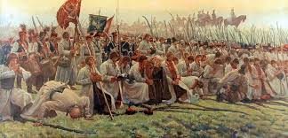
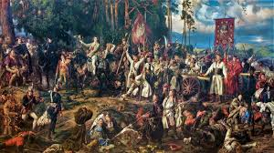

Polskie powstania narodowe
Polskie powstania narodowe

Siły Rosji, Prus i Austrii walczące z powstańcami liczyły łącznie około 120 tys. żołnierzy, lecz były to regularne jednostki, dobrze wyszkolone i uzbrojone. Ponadto zaborcy mogli w razie czego wysłać w bój znacznie większe siły. Tadeusz Kościuszko symbolizuje wojnę o niepodległość Polski w 1794 r. Żaden inny polski dowódca czy polityk nie jest tak mocno i w pojedynkę utożsamiany z ważnym wydarzeniem w dziejach naszego kraju jak on z insurekcją, która jego imię nosi od czasu wybuchu. Ile osób zresztą pamięta, że gdy dostał się do niewoli, Najwyższym Naczelnikiem został Tomasz Wawrzecki, szlachcic litewski, dowódca partyzantki na Żmudzi i Kurlandii, człowiek prawy. Sam Kościuszko po klęsce maciejowickiej żył jeszcze 23 lata. Lecz, jak celnie ujął to prof. Stanisław Herbst, w dniu bitwy (10 października 1794): "Chyba pękło fizyczne zdrowie, załamała się odporność psychiczna, z trudem podtrzymywana wolą (w czasie insurekcji miał dwa załamania). Potem był już tylko cieniem Naczelnika z 1794 r.".
Od przysięgi do klęski 24 marca 1794 r.
 Tadeusz Kościuszko złożył przysięgę na krakowskim rynku. Wcześniej jednak, bo 12 marca z wojskiem ruszył Antoni Madaliński ze swoją brygadą, ok. 1200 jeźdźcami. Madalińskiemu i jego brygadzie groziło rozformowanie. Szli przez Prusy. Liczył, że przyłączy się do niego większość polskiej armii, ale się zawiódł. Przyłączyło się co prawda kilkuset, lecz równie wielu zdezerterowało. Krakowianie też nie poparli Kościuszki. Prezydent miasta, gdy podeszli pod nie Prusacy, poddał je bez wystrzału. Sukcesem powstańców było przyłączenie się Warszawy. W walce o miasto, która zaczęła się 17 kwietnia, mieszczanie i chłopi zabili kilka tysięcy Moskali, bo nie brali jeńców. Kilka miesięcy później krwawy rewanż na mieszkańcach Pragi wziął gen. Aleksandr Suworow. Wielką klęską była porażka pod Maciejowicami. Kościuszko dostał się do niewoli. Gen. Marian Kukiel, historyk wojskowości, napisał: "Maciejowce rozstrzygnęły o losach powstania". Potem była już tylko rzeź Pragi i III rozbiór Polski...